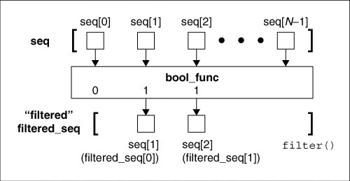
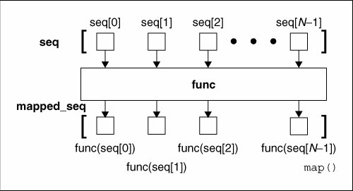
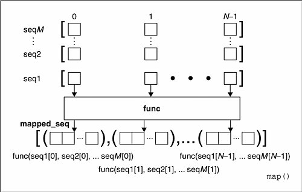
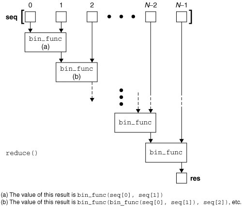
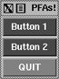

11.7. Functional ProgrammingPython is not and will probably not ever claim to be a functional programming language, but it does support a number of valuable functional programming constructs. There are also some that behave like functional programming mechanisms but may not be traditionally considered as such. What Python does provide comes in the form of four built-in functions and lambda expressions. 11.7.1. Anonymous Functions and lambdaPython allows one to create anonymous functions using the lambda keyword. They are "anonymous" because they are not declared in the standard manner, i.e., using the def statement. (Unless assigned to a local variable, such objects do not create a name in any namespace either.) However, as functions, they may also have arguments. An entire lambda "statement" represents an expression, and the body of that expression must also be given on the same line as the declaration. We now present the syntax for anonymous functions: lambda [arg1[, arg2, ... argN]]: expression Arguments are optional, and if used, are usually part of the expression as well. Core Note: lambda expression returns callable function object
Before we look at any examples using lambda, we would like to review single-line statements and then show the resemblances to lambda expressions. def true(): return True The above function takes no arguments and always returns true. Single line functions in Python may be written on the same line as the header. Given that, we can rewrite our TRue() function so that it looks something like the following: def true(): return True We will present the named functions in this manner for the duration of this chapter because it helps one visualize their lambda equivalents. For our TRue() function, the equivalent expression (no arguments, returns true) using lambda is: lambda :TrueUsage of the named TRue() function is fairly obvious, but not for lambda. Do we just use it as is, or do we need to assign it somewhere? A lambda function by itself serves no purpose, as we see here: >>> lambda :True
<function <lambda> at f09ba0>In the above example, we simply used lambda to create a function (object), but did not save it anywhere nor did we call it. The reference count for this function object is set to True on creation of the function object, but because no reference is saved, goes back down to zero and is garbage-collected. To keep the object around, we can save it into a variable and invoke it any time after. Perhaps now is a good opportunity: >>> true = lambda :True
>>> true()
TrueAssigning it looks much more useful here. Likewise, we can assign lambda expressions to a data structure such as a list or tuple where, based on some input criteria, we can choose which function to execute as well as what the arguments would be. (In the next section, we will show how to use lambda expressions with functional programming constructs.) Let us now design a function that takes two numeric or string arguments and returns the sum for numbers or the concatenated string. We will show the standard function first, followed by its unnamed equivalent. def add(x, y): return x + y Default and variable arguments are permitted as well, as indicated in the following examples: def usuallyAdd2(x, y=2): return x+y Seeing is one thing, so we will now try to make you believe by showing how you can try them in the interpreter: >>> a = lambda x, y=2: x + y >>> a(3) 5 >>> a(3,5) 8 >>> a(0) 2 >>> a(0,9) 9 >>> >>> b = lambda *z: z >>> b(23, 'zyx') (23, 'zyx') >>> b(42) (42,) One final word on lambda: Although it appears that lambda is a one-line version of a function, it is not equivalent to an "inline" statement in C++, whose purpose is bypassing function stack allocation during invocation for performance reasons. A lambda expression works just like a function, creating a frame object when called. 11.7.2. Built-in Functions: apply(), filter(), map(), reduce()In this section, we will look at the apply(), filter(), map(), and reduce() built-in functions as well as give some examples to show how they can be used. These functions provide the functional programming features found in Python. A summary of these functions is given in Table 11.2. All take a function object to somehow invoke.
As you may imagine, lambda functions fit nicely into applications using any of these functions because all of them take a function object with which to execute, and lambda provides a mechanism for creating functions on the fly. *apply( )As mentioned before, the calling syntax for functions, which now allow for a tuple of variable arguments as well as a dictionary of keyword variable arguments, effectively deprecates apply( ) as of Python 1.6. The function will be phased out and eventually removed in a future version of Python. We mention it here for historical purposes as well as for those maintaining code that uses apply( ). filter( )The second built-in function we examine in this chapter is filter( ). Imagine going to an orchard and leaving with a bag of apples you picked off the trees. Wouldn't it be nice if you could run the entire bag through a filter to keep just the good ones? That is the main premise of the filter( ) function. Given a sequence of objects and a "filtering" function, run each item of the sequence through the filter, and keep only the ones that the function returns true for. The filter() function calls the given Boolean function for each item of the provided sequence. Each item for which filter() returns a non-zero (true) value is appended to a list. The object that is returned is a "filtered" sequence of the original. If we were to code filter( ) in pure Python, it might look something like this: def filter(bool_func, seq): filtered_seq = [] for eachItem in seq: if bool_func(eachItem): filtered_seq.append(eachItem) return filtered_seq One way to understand filter() better is by visualizing its behavior. Figure 11-1 attempts to do just that. Figure 11-1. How the filter( ) built-in function works In Figure 11-1, we observe our original sequence at the top, items seq[0], seq[1], ... seq[N-1] for a sequence of size N. For each call to bool_func(), i.e., bool_func (seq [0]), bool_func (seq [1]), etc., a return value of False or true comes back (as per the definition of a Boolean functionensure that indeed your function does return one or the other). If bool_func() returns TRue for any sequence item, that element is inserted into the return sequence. When iteration over the entire sequence has been completed, filter() returns the newly created sequence. We present below a script that shows one way to use filter() to obtain a short list of random odd numbers. The script generates a larger set of random numbers first, then filters out all the even numbers, leaving us with the desired dataset. When we first coded this example, oddnogen.py looked like the following: from random import randint def odd(n): return n % 2 allNums = [] for eachNum in range(9): allNums.append(randint(1, 99)) print filter(odd, allNums) This code consists of two functions: odd(), a Boolean function that determined if an integer was odd (true) or even (false), and main(), the primary driving component. The purpose of main() is to generate ten random numbers between 1 and 100; then filter() is called to remove all the even numbers. Finally, the set of odd numbers is displayed, preceded by the size of our filtered list. Importing and running this module several times, we get the following output: $ python oddnogen.py [9, 33, 55, 65] $ python oddnogen.py [39, 77, 39, 71, 1] $ python oddnogen.py [23, 39, 9, 1, 63, 91] $ python oddnogen.py [41, 85, 93, 53, 3] Refactoring Pass 1We notice on second glance that odd() is simple enough to be replaced by a lambda expression: from random import randint allNums = [] for eachNum in range(9): allNums.append(randint(1, 99)) print filter(lambda n: n%2, allNums) Refactoring Pass 2We have already mentioned how list comprehensions can be a suitable replacement for filter() so here it is: from random import randint allNums = [] for eachNum in range(9): allNums.append(randint(1, 99)) print [n for n in allNums if n%2] Refactoring Pass 3We can further simplify our code by integrating another list comprehension to put together our final list. As you can see below, because of the flexible syntax of list comps, there is no longer a need for intermediate variables. (To make things fit, we import randint() with a shorter name into our code.) from random import randint as ri print [n for n in [ri(1,99) for i in range(9)] if n%2] Although longer than it should be, the line of code making up the core part of this example is not as obfuscated as one might think. map( )The map() built-in function is similar to filter() in that it can process a sequence through a function. However, unlike filter(), map() "maps" the function call to each sequence item and returns a list consisting of all the return values. In its simplest form, map() takes a function and sequence, applies the function to each item of the sequence, and creates a return value list that is comprised of each application of the function. So if your mapping function is to add 2 to each number that comes in and you feed that function to map() along with a list of numbers, the resulting list returned is the same set of numbers as the original, but with 2 added to each number. If we were to code how this simple form of map() works in Python, it might look something like the code below that is illustrated in Figure 11.2. Figure 11-2. How the map() built-in function works def map(func, seq): mapped_seq = [] for eachItem in seq: mapped_seq.append(func(eachItem)) return mapped_seq We can whip up a few quick lambda functions to show you how map() works on real data: >>> map((lambda x: x+2), [0, 1, 2, 3, 4, 5]) [2, 3, 4, 5, 6, 7] >>> >>> map(lambda x: x**2, range(6)) [0, 1, 4, 9, 16, 25] >>> [x+2 for x in range(6)] [2, 3, 4, 5, 6, 7] >>> >>>[x**2 for x in range(6)] [0, 1, 4, 9, 16, 25] We have also discussed how map () can sometimes can be replaced by list comprehensions, so here we refactor our two examples above. The more general form of map() can take more than a single sequence as its input. If this is the case, then map() will iterate through each sequence in parallel. On the first invocation, it will bundle the first element of each sequence into a tuple, apply the func function to it, and return the result as a tuple into the mapped_seq mapped sequence that is finally returned as a whole when map() has completed execution. Figure 11-2 illustrated how map() works with a single sequence. If we used map() with M sequences of N objects each, our previous diagram would be converted to something like the diagram presented in Figure 11-3. Figure 11-3. How the map() built-in function works with > 1 sequence Here are several examples using map() with multiple sequences: >>> map(lambda x, y: x + y, [1,3,5], [2,4,6]) [3, 7, 11] >>> >>> map(lambda x, y: (x+y, x-y), [1,3,5], [2,4,6]) [(3, -1), (7, -1), (11, -1)] >>> >>> map(None, [1,3,5], [2,4,6]) [(1, 2), (3, 4), (5, 6)] The last example above uses map() and a function object of None to merge elements of unrelated sequences together. This idiom was so commonly used prior to Python 2.0 that a new built-in function, zip(), was added just to address it:
>>> zip([1,3,5], [2,4,6]) [(1, 2), (3, 4), (5, 6)] reduce( )The final functional programming piece is reduce(), which takes a binary function (a function that takes two values, performs some calculation and returns one value as output), a sequence, and an optional initializer, and methodologically "reduces" the contents of that list down to a single value, hence its name. In other languages, this concept is known as folding. It does this by taking the first two elements of the sequence and passing them to the binary function to obtain a single value. It then takes this value and the next item of the sequence to get yet another value, and so on until the sequence is exhausted and one final value is computed. You may try to visualize reduce() as the following equivalence example: reduce(func, [1, 2, 3]) Some argue that the "proper functional" use of reduce() requires only one item to be taken at a time for reduce(). In our first iteration above, we took two items because we did not have a "result" from the previous values (because we did not have any previous values). This is where the optional initializer comes in (see the init variable below). If the initializer is given, then the first iteration is performed on the initializer and the first item of the sequence, and follows normally from there. If we were to try to implement reduce() in pure Python, it might look something like this: def reduce(bin_func, seq, init=None): lseq = list(seq) # convert to list if init is None: # initializer? res = lseq.pop(0) # no else: res = init # yes for item in lseq: # reduce sequence res = bin_func(res, item) # apply function return res # return result This may be the most difficult of the four conceptually, so we should again show you an example as well as a functional diagram (see Figure 11-4). The "hello world" of reduce() is its use of a simple addition function or its lambda equivalent seen earlier in this chapter: Figure 11-4. How the reduce() built-in function works · def mySum(x,y): return x+y · lambda x,y: x+y Given a list, we can get the sum of all the values by simply creating a loop, iteratively going through the list, adding the current element to a running subtotal, and being presented with the result once the loop has completed: >>> def mySum(x,y): return x+y >>> allNums = range(5) # [0, 1, 2, 3, 4] >>> total = 0 >>> for eachNum in allNums: ... total = mySum(total, eachNum) ... >>> print 'the total is:', total the total is: 10 Using lambda and reduce(), we can do the same thing on a single line: >>> print 'the total is:', reduce((lambda x,y: x+y), range(5)) the total is: 10 The reduce() function performs the following mathematical operations given the input above: ((((0 + 1) + 2) + 3) + 4) It takes the first two elements of the list (0 and 1), calls mySum() to get 1, then calls mySum() again with that result and the next item 2, gets the result from that, pairs it with the next item 3 and calls mySum(), and finally takes the entire subtotal and calls mySum() with 4 to obtain 10, which is the final return value. 11.7.3. Partial Function ApplicationThe notion of currying combines the concepts of functional programming and default and variable arguments together. A function taking N arguments that is "curried" embalms the first argument as a fixed parameter and returns another function object taking (the remaining) N-1 arguments, akin to the actions of the LISP primitive functions car and cdr, respectively. Currying can be generalized into partial function application (PFA), in which any number (and order) of arguments is parlayed into another function object with the remainder of the arguments to be supplied later. In a way, this seems similar to default arguments where if arguments are not provided, they take on a "default" value. In the case of PFAs, the arguments do not have a default value for all calls to a function, only to a specific set of calls. You can have multiple partial function calls, each of which may pass in different arguments to the function, hence the reason why default arguments cannot be used. This feature was introduced in Python 2.5 and made available to users via the functools module.
Simple Functional ExampleHow about creating a simple little example? Let us take two simple functions add() and mul(), both found in the operator module. These are just functional interfaces to the + and * operators that we are already familiar with, e.g., add(x, y) is the same as x + y. Say that we wanted to add one to a number or multiply another by 100 quite often in our applications. Rather than having multiple calls like add(1, foo), add(1, bar), mul(100, foo), mul(100, bar), would it not be nice to just have existing functions that simplify the function call, i.e., add1(foo), add1(bar), mul100(foo), mul100(bar), but without having to write functions add1() and mul100()? Well, now you can with PFAs. You can create a PFA by using the partial() function found in the functional module: >>> from operator import add, mul >>> from functools import partial >>> add1 = partial(add, 1) # add1(x) == add(1, x) >>> mul100 = partial(mul, 100) # mul100(x) == mul(100, x) >>> >>> add1(10) 11 >>> add1(1) 2 >>> mul100(10) 1000 >>> mul100(500) 50000 This example may or may not open your eyes to the power of PFAs, but we have to start somewhere. PFAs are best used when calling functions that take many parameters. It is also easier to use PFAs with keyword arguments, because specific arguments can be given explicitly, either as curried arguments, or those more "variable" that are passed in at runtime, and we do not have to worry about ordering. Below is an example from the Python documentation for use in applications where binary data (as strings) need to be converted to integers fairly often: >>> baseTwo = partial(int, base=2)
>>> baseTwo.__doc__ = 'Convert base 2 string to an int.'
>>> baseTwo('10010')
18This example uses the int() built-in function and fixes the base to 2 specifically for binary string conversion. Now instead of multiple calls to int() all with the same second parameter (of 2), e.g., int('10010', 2), we can simply use our new baseTwo() function with a single argument. Good style is also followed because it adds a documentation string to the "new (partial) function," and it is also another good use of "function attributes" (see Section 11.3.4 above). One important thing to note is that the keyword argument base is required here. Be Wary of KeywordsIf you create the partial function without the base keyword, e.g., baseTwoBAD = partial(int, 2), it would pass the arguments to int() in the wrong order because the fixed arguments are always placed to the left of the runtime arguments, meaning that baseTwoBAD(x) == int(2, x). If you call it, it would pass in 2 as the number to convert and the base as '10010', resulting in an exception: >>> baseTwoBAD = partial(int, 2)
>>> baseTwoBAD('10010')
Traceback (most recent call last):
File "<stdin>", line 1, in <module>
TypeError: an integer is requiredWith the keyword in place, the order is preserved properly since, as you know, keyword arguments always come after the formal arguments, so baseTwo(x) == int(x, base=2). Simple GUI Class ExamplePFAs also extended to all callables like classes and methods. An excellent example of using PFAs is in providing "partial-GUI templating." GUI widgets often have many parameters, such as text, length, maximum size, background and foreground colors, both active and otherwise, etc. If we wanted to "fix" some of those arguments, such as making all text labels be in white letters on a blue background, you can customize it exactly that way into a pseudo template for similar objects. Example 11.6. Partial Function Application GUI (pfaGUI.py)
In lines 7-8, we create the "partial class instantiator" (because that is what it is instead of a partial function) for Tkinter.Button, fixing the parent window argument root and both foreground and background colors. We create two buttons b1 and b2 matching this template providing only the text label as unique to each. The quit button (lines 11-12) is slightly more customized, taking on a different background color (red, which overrides the blue default) and installing a callback to close the window when it is pressed. (The other two buttons have no function when they are pressed.) Without the MyButton "template," you would have to use the "full" syntax each time (because you are still not giving all the arguments as there are plenty of parameters you are not passing that have default values): b1 = Tkinter.Button(root, fg='white', bg='blue', text='Button 1')
b2 = Tkinter.Button(root, fg='white', bg='blue', text='Button 2')
qb = Tkinter.Button(root, fg='white', text='QUIT', bg='red',
command=root.quit)Here is a snapshot of what this simple GUI looks like:  Why bother with so much repetition when your code can be more compact and easy to read? You can find out more about GUI programming in Chapter 18 (Section 18.3.5), where we feature a longer example of using PFAs. From what you have seen so far, you can see that PFA takes on the flavors of templating and "style-sheeting" in terms of providing defaults in a more functional programming environment. You can read more about them in the documentation for the functools module documentation found in the Python Library Reference, the "What's New in Python 2.5" document, and the specifying PEP 309. |


 func(func(1, 2), 3)
func(func(1, 2), 3) 10
10